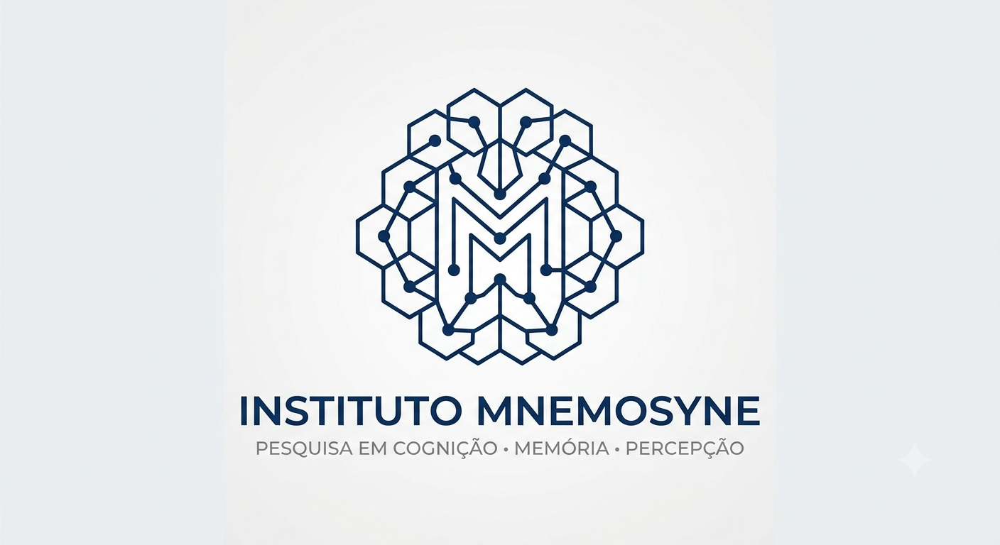
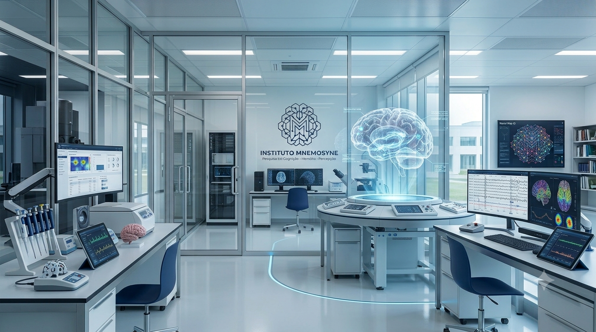

Pesquisa de Excelência
Projetos desenvolvidos por especialistas em memória, cognição e percepção humana.

O Instituto Mnemosyne conduz pesquisas avançadas sobre memória, percepção e cognição, unindo neurociência, tecnologia e ciência da informação para compreender os mecanismos da mente humana.
Anos de Pesquisa
Pesquisadores
Artigos Publicados
Projetos Ativos
Há quase três décadas desenvolvendo pesquisas de excelência em neurociência cognitiva e ciência da informação.
Projetos desenvolvidos por especialistas em memória, cognição e percepção humana.
Equipamentos de última geração para experimentos e análises neurocientíficas.
Parcerias com universidades e centros de pesquisa reconhecidos mundialmente.
Ambientes preparados para pesquisa científica de alto nível, integrando tecnologia, neurociência e análise cognitiva.
Estudos sobre memória, atividade cerebral e aprendizagem.

Pesquisas envolvendo percepção, atenção e tomada de decisão.
Desenvolvimento de novas metodologias científicas.
Ao longo de quase três décadas, o Instituto Mnemosyne contribuiu para importantes avanços na pesquisa cognitiva.
Parcerias Acadêmicas
Países Colaboradores
Projetos Concluídos
Prêmios Científicos
Investigação dos mecanismos responsáveis pela formação, armazenamento e recuperação de lembranças.
Conhecer pesquisaEstudos sobre como o cérebro interpreta estímulos sensoriais e constrói a realidade percebida.
Conhecer pesquisaPesquisas voltadas ao raciocínio, aprendizagem, tomada de decisão e processamento de informações.
Conhecer pesquisaProjeto interno com acesso restrito aos pesquisadores autorizados.
Solicitar acessoConheça algumas das pesquisas recentes desenvolvidas pelo Instituto Mnemosyne.
Um estudo sobre os mecanismos responsáveis pela estabilização de memórias após eventos emocionalmente relevantes.
Ler publicação →Avaliação dos efeitos da realidade virtual na percepção subjetiva do tempo.
Ler publicação →Documento indisponível para consulta pública.
Ler publicação →Pesquisa sobre adaptação neural durante tarefas de alta complexidade cognitiva.
Ler publicação →Acompanhe as principais novidades e comunicados do Instituto Mnemosyne.
O Instituto concluiu a modernização do Laboratório B, voltado ao estudo de agentes microbiológicos que afetam processos cognitivos. As atividades seguem normalmente desde a reabertura.
Ler notícia →Pesquisadores do Instituto participaram de um encontro internacional sobre memória, percepção e neuroplasticidade.
Ler notícia →Novos servidores foram instalados para processamento de dados científicos e simulações de larga escala.
Ler notícia →O Instituto Mnemosyne reúne pesquisadores dedicados ao estudo da memória, percepção e processamento da informação. Nossa missão é desenvolver conhecimento científico que contribua para o avanço da neurociência e da compreensão da mente humana.